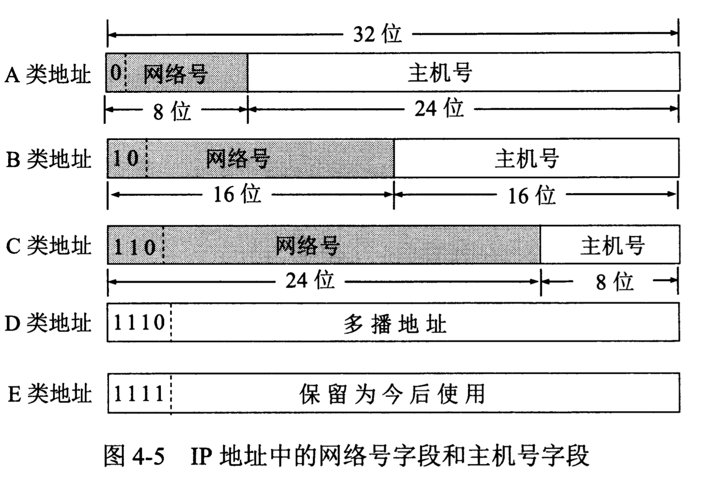
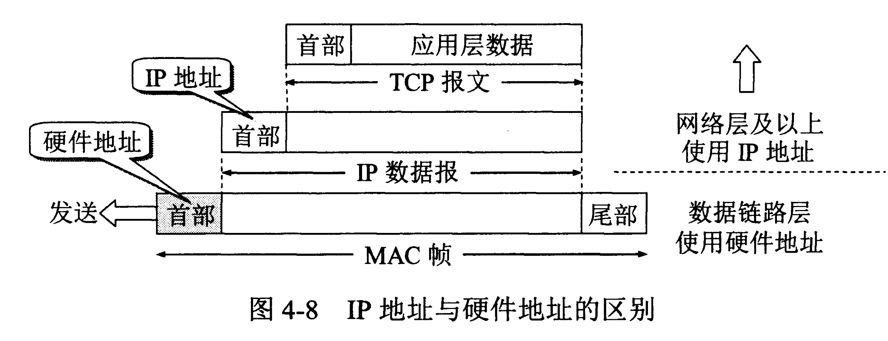
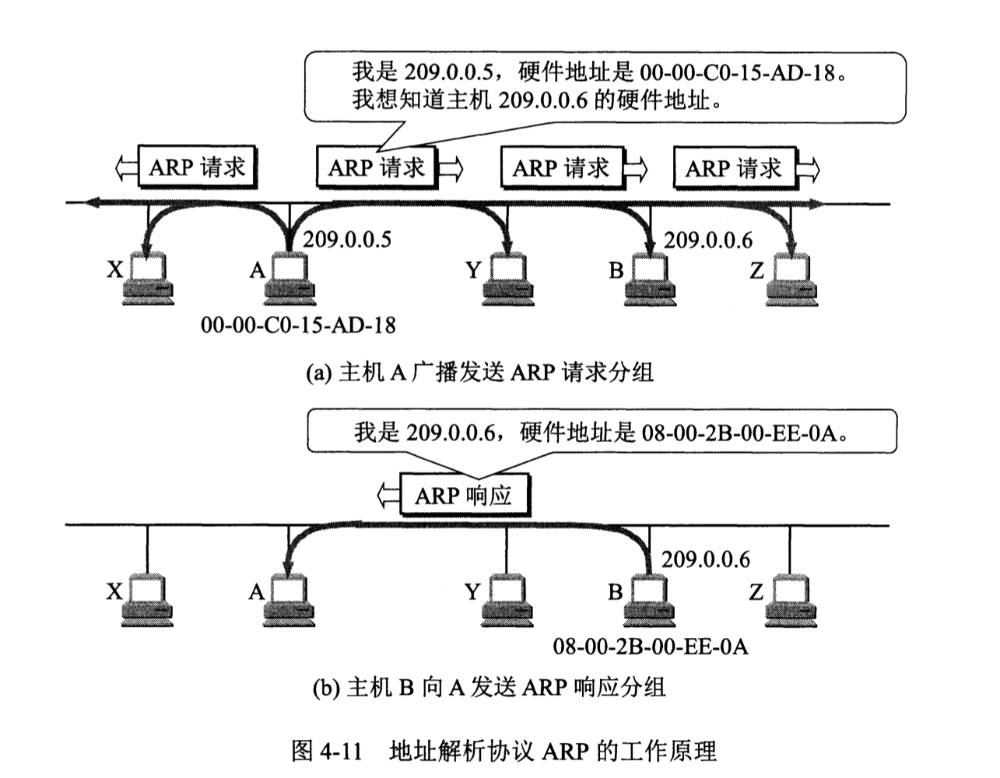
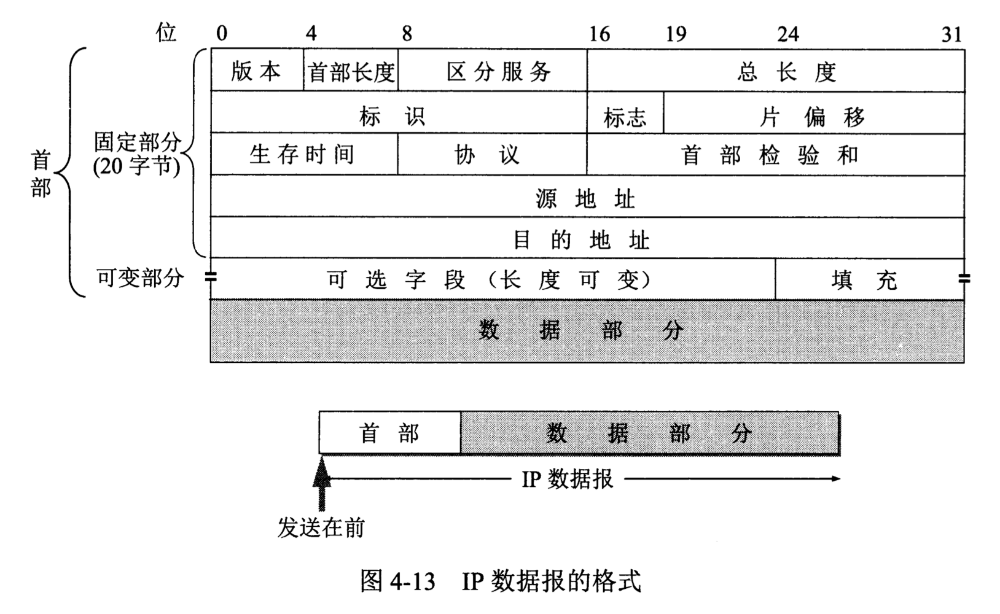

计算机网络/网络层/网际协议IP 与IP协议配套使用的还有三个协议： - 地址解析协议ARP(Address Resolution Protocol) - 网际控制报文协议ICMP(Internet Control Message Protocol) - 网际组管理协议IGMP(Internet Group Management Protocol)
分类的IP地址
IP地址及其表示方法
IP地址的编址方法共经过三个历史阶段。 1. 分类的IP地址。这是最基本的编址方法。 2. 子网的划分。这是对最基本的编址方法的改进。 3. 构成超网。这是比较新的无分类编址方法。
IP地址::={<网络号>,<主机号>}

常见的IP地址

IP地址具有以下一些重要特点。 1. 每一个IP地址都由网络号和主机号两部分组成。 2. 实际上IP地址是标志一台主机（或路由器）和一条链路的接口。 3. 按照互联网的观点，一个网络是指具有相同网络号net-id的主机集合。 4. 在IP地址中，所有分配到网络号的网络（不管是范围很小的局域网，还是可能覆盖很大地理范围的广域网）都是平等的。
IP地址与硬件地址
从层次的角度看，物理地址是数据链路层和物理层使用的地址，而IP地址是网络层和以上各层使用的地址，是一种逻辑地址（称IP地址为逻辑地址是因为IP地址是用软件实现的）。

- 在IP层抽象的互联网上只能看到IP数据报。
- 虽然在IP数据报首部有源站IP地址，但路由器只根据目的站的IP地址的网络号进行路由选择。
- 在局域网的链路层，只能看见MAC帧。
- 尽管互连在一起的网络的硬件地址体系各不相同，但IP层抽象的互联网却屏蔽了下层这些很复杂的细节。
地址解析协议ARP
ARP协议的用途是为了从网络层使用的IP地址，解析出在数据链路层使用的硬件地址。 每一台主机都设有一个ARP高速缓存(ARP cache)，里面有本局域网上的各主机和路由器的IP地址到硬件地址的映射表，并且这个映射表还经常动态更新。 映射表的更新通过广播ARP请求分组和单播ARP响应分组来完成。ARP对保存在高速缓存中的每一个映射地址项目都设置生存时间。凡超过生存时间的项目就从高速缓存中删除。

ARP是解决同一个局域网上的主机或路由器的IP地址和硬件地址的映射问题。
IP数据报的格式

IP数据报首部的固定部分中的各字段
- 版本 占4位，指IP协议的版本。
- 首部长度 占4位，可表示的最大十进制数值是15。
- 区分服务 占8位，用来获得更好的服务。未使用
- 总长度 占16位，总长度指首部和数据之和的长度，单位为字节。
- 标识(identification) 占16位。IP软件在存储器中维持一个计数器，每产生一个数据报，计数器就加1，并将此值赋给标识字段。
- 标志(flag) 占3位，但目前只有两位有意义。
- MF(More Fragment)。MF=1即表示后面“还有分片”的数据报。MF=0表示这已是若干数据报片中的最后一个。
- DF(Don't Fragment)。意思是“不能分片”。只有当DF=0时才允许分片。
- 片偏移 占13位。片偏移指出：较长的分组在分片后，某片在原分组中的相对位置。
- 生存时间 占8位，生存时间字段常用的英文缩写是TTL(Time To Live)，表明这是数据报在网络中的寿命，即跳数限制。
- 协议 占8位，协议字段指出此数据报携带的数据是使用何种协议。
- 首部检验和 占16位。这个字段只检验数据报的首部，但不包括数据部分。
- 源地址 占32位。
- 目的地址 占32位。
- 可变部分。IP数据报首部的可变部分就是一个选项字段。选项字段用来支持排错、测量以及安全等措施。此字段的长度可变，从1个字节到40个字节不等，取决于所选择的项目。
IP层转发分组的流程
分组转发算法如下： 1. 从数据报的首部提取目的主机的IP地址D，得出目的网络地址为N。 2. 若N就是此路由器直接相连的某个网络，则进行直接交付，不需要再经过其他的路由器，直接把数据报交付目的主机（这里包括把目的主机地址D转换为具体硬件地址，把数据报封装为MAC帧，再发送此帧）；否则就是间接交付，执行(3) 3. 若路由表中有目的地址为D的特定主机路由，则把数据报传送给路由表中所指明的下一跳路由器；否则，执行(4)。 4. 若路由表中有到达网络N的路由，则把数据报传送给路由表中所指明的下一跳路由器；否则，执行(5)。 5. 若路由表中有一个默认路由，则把数据报传送给路由表中所指明的默认路由器；否则执行(6)。 6. 报告转发分组出错。
参考文献：《计算机网络（第7版）》谢希仁著。